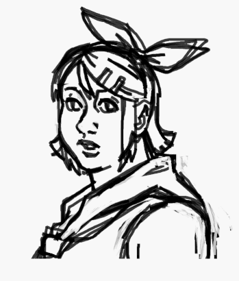

Let's just jump right in. If you draw your sketch in, say, the default red with the pencil tool on white canvas, and you draw your lineart in black pencil tool on top of that red sketch,


You can easily erase the sketch and be left with only the black lineart.


You can then copy and paste a duplicate of the lineart next to the original on the same canvas, pick a color you don't intend to use in the drawing,
and use the shape tool to draw a box around the dupe in that color. Fill it in so you are left with something that looks like this:

You can now fill in your lineart with flat colors. If you fill the canvas and anything you want to stay white with a different color
(as long as it's not the same as the frame around the dupe of course),

you can use the eraser method to color in any white pixels you may have missed in gaps or the corners of your lineart.
Select color one to be white (or whatever the color of the canvas you drew your lineart on top of was if you've used a different background color),
and select color two to match either the lineart or the fill color you used where the white pixels are, whichever you prefer.
Now left-click erase over the lineart, this should get rid of them and leave you with a nice, clean, flat colored drawing.

You can stop here if you want of course! Just fill your whites back in and crop how you please, voilà!

or you can shade it!.
There are two main ways you can go about shading. you could go for cel-shading, or do it in a more painterly way. you're going to have to pick your shadow colors manually.
Don't worry if you are used to relying on clipping masks and layer modes for shading, this will be good for you. If you want to, please hand-pick from the color wheel!
But on-canvas color mixing is my preferred method of making new colors personally.
If you'd like to give it a try:
Pick some dark colors from the base colors in the swatch menu (or choose a custom one). Take the colors you've already used in
the drawing and make a swatch row on the canvas. Once you have done this, you're going to want to pick the marker from the brush menu. Yes. The marker. This brush is
semi-transparent and untextured, it will be your best
friend in color mixing; theoretically, you can use other brushes for this too, but the marker is easiest and more predictable, imo.
Change color 1 to one of the dark colors you picked. Draw one single stroke over one of the swatches, color pick it, ctrl Z. Draw one single stroke
over the same swatch, color pick it, ctrl Z. Do this as many times as you feel you need until
you get a suitable shadow color. Once you do, save that to your color palette or make
a swatch on canvas you can eyedrop from later if it's full. Do this for all the colors you want to shade.

you can also darken colors by laying light over dark

Now, if you're gonna cel-shade, a classic way to do it is to draw the outlines of all your shadows on top of the lineart and flats and then fill them with the bucket tool.

Because I've been making both shading guides simultaneously, I fucked up and forgot to fill my shading at this stage, but I recommend you do it before moving on to the next step.
(The difference between filling now and filling later is that if you fill now, you can prevent more stray color pixels in tight spots around your lineart.)
If you want to use the antialiasing brushes, you just paint directly over the picture with your brush. It's ok if you go on top of the lineart and beyond the silhouette,
but try to stay
inside (or on top of, but not beyond) the lines within the silhouette, lest you have to do clean-up afterwards.

When you've done this you might think, "Ok wtf, now my lineart is fucked up." That's where the dupe comes in.
Copy the dupe (make sure transparent selection is turned on) and paste it on top.


(The painted shading can be a little hard to align. If you're having a hard time, try to find a relatively exposed point of the lineart
to focus on and wiggle the lineart around with the arrow keys to make sure they are perfectly aligned.)
This is where I realized I fucked up the cell shading example:

But it was an easy fix, just filled them in and cleaned up the few places the shading lines had overlapped in an unpleasant way.

As for the painted shading...

Now it's clean! Unless it's not, in that case just erase and refill parts where things got messy from the shading process and repaste the lineart a second time.
This would be a good place to consider it finished, fill the masking color around the lineart with white. And crop as you please. Or...

If you wanted to, you could color the lineart with the same technique as we used to erase the sketch and fill in stray pixels, just choose a small eraser size and take your time.
Let's have a look at the results, shall we!


wow! That wasn't so hard! Turned out pretty alright I think, especially considering I don't use these methods myself very often since I'm not that enthusiastic about
the whole sketch-lineart-color-shade pipeline regardless of what program I'm using.
It's been a very long time since I attempted the painted type of shading. If you wanted
to spend the time fully rendering it, you absolutely could.
If you're still gonna use lineart and paint on top of it, perhaps it'd be a good idea to color the lineart right after
you've laid down your flats. I've never done it that way myself, so don't take my word for it though.
NOW, NOW, YOU CAN GET GREAT RESULTS WITH THESE METHODS...
BUT LET'S NOT FORGET IT'S CALLED MICROSOFT PAINT AND NOT MICROSOFT DRAW.
I have gone over a way to approach drawing in MS Paint that will likely feel somewhat familiar and safe to your average digital artist.
Maybe it's not too different from how they already make their art, sans fancy layer modes and custom brushes. My goal was to make it unintimidating.
If you always draw in a flat, graphic style, perhaps you won't have any use for what is to come, perhaps what you can already find above is more than plenty*.
On the other hand, if you paint or render your art... the painted shading method described above may be adequate, but it is not ideal. Eventually, I would like to
show and tell you about MS Paint as a |painting| tool, working /with/ it, instead of trying to bend it into an entirely different program against its will.
Y'know, like some kind of pervert (Unless you're into that kind of thing, sicko.)
With much sorrow and a heavy heart, I regret to inform you that it will not be this time.
Good work takes time, and I'm passionate about making my propaganda work**. But here's a process gif of an MS Paint Rin to tide you over while I write my manifesto:

*But if you want more variation in your lines while still being able to use the fill tool, I would like to remind that the spraybox brush is also aliased, or "binary",
and nothing is stopping you from just switching the places of black and white and using the eraser as a square brush either.
**Even if I am bad at it and do not succeed, I am passionate about trying. For MS Paint <3.
{kind=link}